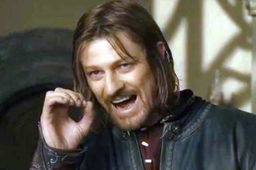

Описание

Трилогия «Властелин Колец» бесспорно возглавляет список «культовых» книг XX века.
Ее автор, Дж.Р.Р.Толкин, профессор
Оксфордского университета, специалист по древнему и средневековому английскому языку, создал удивительный мир -
Среднеземье, который вот уже без малого пятьдесят лет неодолимо влечет к себе миллионы читателей.
Там, в Среднеземье, в
стране, управляемой советом волшебников, где в серебряных лесах поют эльфы, в глубоких пещерах добывают драгоценный
мифрил гномы,
а бескорыстие добрых чародеев постоянно подвергается испытаниям, - разгорается битва Света и Тьмы, исход
которой, по воле провидения, зависит от самых маленьких жителей - Хоббитов.
История Кольца Всевластья послужила основой
множеству телевизионных и театральных постановок, мультфильмов, компьютерных игр и комиксов.
Тысячи людей по всему миру
ежегодно собираются для участия в ролевых играх, основанных на сюжетах, взятых у Толкина.
Эпопею Толкина, как миф,
можно интерпретировать по - разному - и как повествование о бывших или будущих событиях, и как притчу, и как аллегорию,
и как историю духовного восхождения, и как фантастику, - все толкования будут верны, но ни одно не станет полным.
«Возвращение Короля» – третий том трилогии. Здесь рассказывается о последней битве, о том, как Хранитель выполнил свою
миссию и как погибло царство Саурона.
Глава 1 Минас Тирит
Пиппин выглянул из-под плаща Гэндальфа. Он никак не мог понять, во сне или наяву свистит в ушах черный ночной ветер,
медленно плывет зубчатая тень гор далеко справа, во сне или наяву качается у него над головой звездное небо. Он пытался
вспомнить, что с ним и где он, но мысли путались, отдельные картины сменяли друг друга.
Яркий желтый огонь в темном небе заставил Пиппина съежиться от страха. Зачем Гэндальф везет его в это страшное, там,
впереди? Он протер глаза. На востоке всходила луна. Значит, они будут скакать и скакать, мчаться сквозь ночь бесконечно
долго.
– Где мы, Гэндальф?
– На землях Гондора. Это - Анориен.
Пиппин притих, но тут же прижался к магу.
– Что там? Смотри! Красный огонь! Как драконий глаз. А вон еще один!
Гэндальф только крикнул коню:
– Вперед, Сполох, вперед! Спеши, друг! - и, наклонившись к Пиппину, сказал: - Смотри. Это зовут на помощь огни Гондора.
Война началась. Вот огонь на Амон Дине, пламя на Эленахе, и дальше огни, Нардол, Эрелас, Мин Риммон, Каленхад и
Халифириен у границ Рохана. Вперед, Сполох!
Глава 2 Выбор Арагорна
Но конь вдруг пошел рысью, потом шагом и, подняв голову, заржал. Из темноты послышалось ответное ржание, и мимо них на
запад промчались трое всадников. Пиппин едва разглядел их во тьме. Белый конь подобрался, рванулся вперед, и снова ночь
зашумела вокруг ветром.
Сквозь дрему Пиппин слышал, как Гэндальф рассказывает ему о гондорских Правителях, о сигнальных огнях, быстро
передающих важные вести через всю страну, о подставах на границах, где всегда ждали гонцов свежие кони.
– Давно уж не загорались северные огни, - говорил маг. - В прежние времена ими почти не пользовались… Семь Палантиров
было в то время в Гондоре.
Пиппин, услышав о страшном камне, который и так не шел у него из головы, беспокойно пошевелился.
– Спи, - сказал маг, - спи и не бойся. Мы ведь с тобой идем не в Мордор, как Фродо с Сэмом, а в Минас Тирит. Там сейчас
так же безопасно, как у вас в Шире. Пока, - значительно добавил он, - потому что если Кольцо вернется к Врагу, если
падет Гондор, то тебя и Шир не спасет.
«Вот уж утешил» - подумал Пиппин, засыпая снова. Последнее, что он помнил, был блеск луны на снежных вершинах гор. Он
еще успел подумать о том, где сейчас Фродо, жив ли он, добрался ли до Мордора.
Фродо в Итилиене смотрел на ту же луну, незадолго до рассвета заходящую над Гондором.
Глава 3 Рохан собирает войска
Хоббиты вернулись в долину. Онтомолвище продолжалось вовсю: то глуше, то громче звучала напевная неспешная беседа.
Солнце поднялось над оградой, брызнули серебром кроны срединных берез, и желтоватым светом озарился северный склон.
Блеснул незаметный родник.
Хоббиты пошли закраиной круглой долины, возле вечнозеленой изгороди – так отрадно было не
спеша брести по свежей мягкой траве – и напрямик спустились к искристому фонтанчику. От кристальной студеной воды
заныли зубы.
Они уселись на обомшелый валун и смотрели, как бегают по траве солнечные блики и проплывают тени облаков.
Онтомолвище не смолкало. Какие-то все ж таки непонятные, совсем уж чужедальние это были места, точно все былое осталось
в другой жизни.
И чуть не до слез захотелось увидеть лица и услышать голоса друзей – особенно Фродо, особенно Сэма и
особенно Бродяжника.
Глава 4 Осада Города
– Я уж и не знаю, что меня больше пугает: Фангорн или пеший путь в Ристанию, – проворчал Гимли.
– Тогда пошли в Лес, – сказал Арагорн.
Вскоре отыскались новые, опять-таки еле заметные хоббитские следы: возле берега Онтавы и под раскидистыми ветвями
огромного дерева на самой опушке – земля там была голая и сухая.
– Уж один-то хоббит точно стоял здесь и озирался, а потом побежал в Лес, – сказал Арагорн.
– Значит, и нам Леса не миновать, – вздохнул Гимли. – Ох, не по нутру мне этот Фангорн, и ведь сказано было – нам в
него не забираться! За ними, так за ними, только бы не сюда.
– А я не думаю, что это злокозненный Лес, не внушает он мне опаски, – задумчиво произнес Леголас. Он стоял у лесного
порога, подавшись вперед, вслушиваясь и вглядываясь в тусклую чащобу. – Кознями здесь и не пахнет; я, правда, чую
слабое и дальнее зловещее эхо – наверно, где-нибудь в темной глуши деревья с гнилой сердцевиной таят недобрые замыслы.
Но поблизости нет никакого лиходейства, просто Лес встревожен и рассержен.
– На меня-то за что ему сердиться? – буркнул Гимли. – Я ему худа не сделал.
– Не сделал, – подтвердил Леголас. – Но он и без тебя натерпелся. И еще...
Что-то такое в этом Лесу то ли творится, то
ли готовится. Чувствуешь, как замерло все кругом? Дыханье перехватывает.
– Да, душновато, – согласился гном. – Лихолесье-то ваше куда погуще будет, и дух там спертый, но не такой затхлый, и
деревья не такие ветхие.
Глава 5 Поход Теодена
Негостеприимные ворота приоткрылись, и путники вошли по одному вслед за своим вожатым.
В гору поднималась извилистая брусчатая улица: то плавные изгибы, то короткие лестницы, выложенные узорными плитами.
Они шли мимо бревенчатых домов, глухих изгородей, запертых дверей, возле переливчатого полноводного ручья, весело журчавшего в просторном каменном желобе.
Выйдя к вершине горы, они увидели, что над зеленой террасой возвышается каменный настил, из него торчала искусного ваяния лошадиная голова, извергавшая прозрачный водопад в огромную чашу; оттуда и струился ручей.
Длинная и широкая мраморная лестница вела ко входу в золотой чертог; по обе стороны дверей были каменные скамьи для телохранителей конунга: они сидели с обнаженными мечами на коленях.
Золотистые волосы, перехваченные тесьмой, ниспадали им на плечи; зеленые щиты украшал солнцевидный герб;
их длинные панцири сверкали зеркальным блеском. Они поднялись во весь рост и казались на голову выше простых смертных.
Книга Пятая
- Глава 3 Рохан собирает войска
Вверх